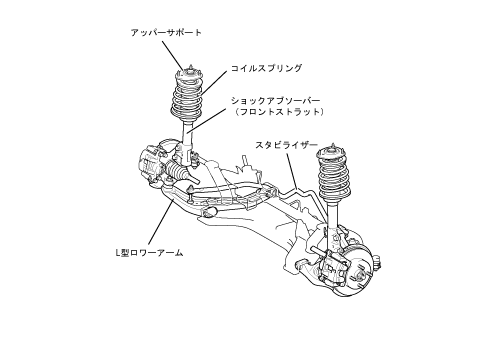
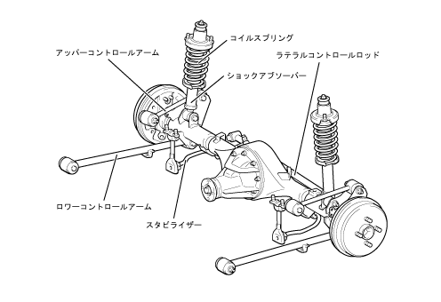
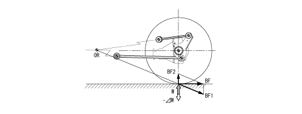
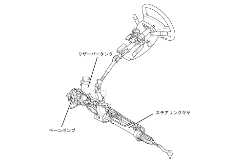

走行性能
フロントサスペンション概要
フロントサスペンション概要
●
2WD車と同様，L型ロワーアームを持つマクファーソンストラット式サスペンションを採用しました。
●
バネ定数（コイルスプリング），減衰力特性（ショックアブソーバー）を4WD車専用とし，アライメントを最適化することで，優れた乗り心地と優れた操縦性・安定性の両立をはかりました。
●
スタビライザーは4WD車専用形状としました。

アライメント仕様（参考：空車時）
キャンバー [度]
-0°40′
キャスター [度]
2°00′
キングピン角 [度]
10°15′
トーイン ［mm]
0
リヤサスペンション概要
リヤサスペンション概要
●
4WD車に，ラテラルコントロールロッド付き4リンク車軸式サスペンションを採用しました。
●
コントロールアームなどの構成部品の最適配置により，サスペンションジオメトリーの最適化をはかるとともに，ショックアブソーバーの減衰力・コイルスプリングのばね定数を最適化して，操縦安定性と乗り心地の両立を実現しました。
●
中実丸棒製のスタビライザーを設定しました。

アライメント仕様（参考：空車時）
キャンバー [度]
0゜00′
トーイン [mm]
0
ロールステアのアンダーステア化 同位相時（イータビーム式サスペンション）
・
左右のトレーリングアームは，左右のブシュを結ぶ線を軸として同位相で作動します。同位相時（直進時）のステア角はバウンド・リバウンド時共，ほぼ一定の角度を保っており優れた直進安定性を実現します。
ロールステアのアンダーステア化 逆位相時（イータビーム式サスペンション）
・
逆位相時，または左・右輪にサスペンションストローク差が発生した場合は，アクスルビームのせん断中心を回転中心として捩られます。
・
サスペンションストロークに対するキャンバーの変化は，トレーリングアームブシュ～アクスルセンター間距離と，トレーリングアームブシュ～アクスルビームのせん断中心距離との比率で決まります。このため，サスペンションストロークに対するキャンバー角度変化の最適化をはかり，アクスルビームを最適配置して優れた旋回性能を確保しました。
トーコレクト機能の構造（イータビーム式サスペンション）
・
イータビーム式リヤサスペンションは，ブシュによってボデーに取り付けられたトレーリングアーム中間部にU字断面を持つアクスルビームを配置しています。
・
ボデーとトレーリングアームを結合したブシュ構造は，ボデーの前後方向と左右方向でコンプライアンス特性が異なる設定となっており，車両のコーナーリング時に発生するブシュのたわみを利用したトーコレクト機能によりコンプライアンスステアを発生させて，優れた操縦性・安定性および乗り心地を高次元で両立しました。
トーコレクト機能の作動（イータビーム式サスペンション）
・
旋回時に発生する車体の前後力と横力により，トレーリングアームに取り付けられたブシュが変形し，右旋回側では右側トレーリングアームは前側，左トレーリングアームは後ろ側へ移動しようとして後輪横滑り傾向となります。 そこで，トレーリングアームに取り付けられたブシュ形状により，旋回時にブシュに発生する前後力と横力から，トレーリングアーム方向を前輪横滑り側へ修正しようとする合力を発生させるトーコレクト機能によって補正を行い，ステア角の最適化をはかっています。
アンチリフトジオメトリー（イータビーム式サスペンション）
・
制動時に発生する車両後部の浮き上がり（リフト）は，慣性力によって起きる車体の重心移動から後輪荷重が減少することで発生します。
・
路面に発生する制動力を，車体はサスペンションの幾何学的交点（OR）によって支えます。このとき制動力（BF）は交点方向の力（BF1）と接地面方向に作用する力（BF2）の分力を発生します。
・
この接地面方向に働く力は交点（OR）の高さを変えることにより，力の大きさ・方向を変えることができ，路面より高い位置に設定することにより荷重変動（W）方向と逆方向に作用するようになり車両後部のリフト量を抑制します。
アンチリフトジオメトリー
・
制動時，慣性力によって車体重心が前方に移動し，車体後部の浮き上がり（リフト）が発生します。
・
路面に発生する制動力を，車体はサスペンションの幾何学的交点（OR）によって支えます。このとき制動力（BF）は交点方向の力（BF1）と接地面方向に作用する力（BF2）の分力を発生します。
・
この接地面に働く力（BF2）は交点（OR）の高さを変えることにより，力の大きさ・方向を変えることができ，路面より高い位置に設定することにより，荷重移動（⊿W）方向と逆方向に作用するようになり車体後部のリフト量を抑制します。

パワーステアリング概要
パワーステアリング概要
●
4WD車のエンジン回転数感応型パワーステアリングは，仕様の最適化をはかるとともに，4WD車専用のステアリングギヤを設定しました。
